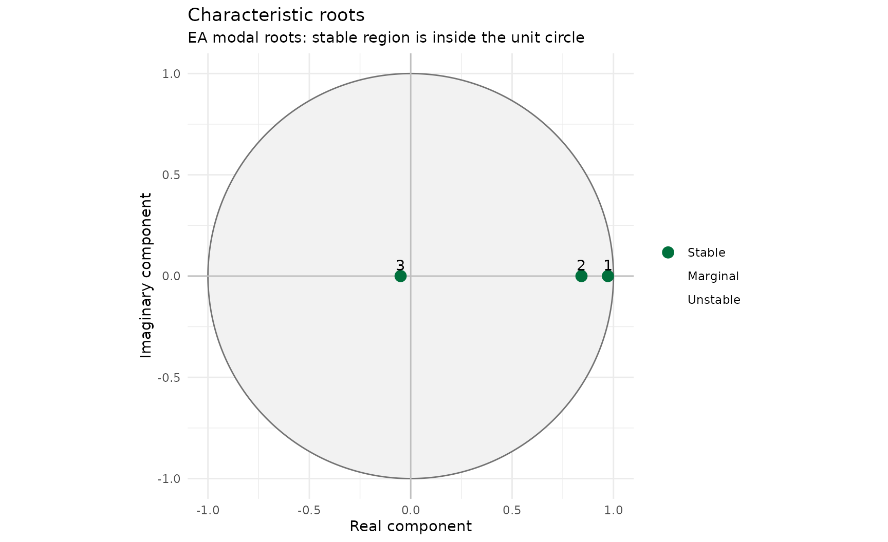
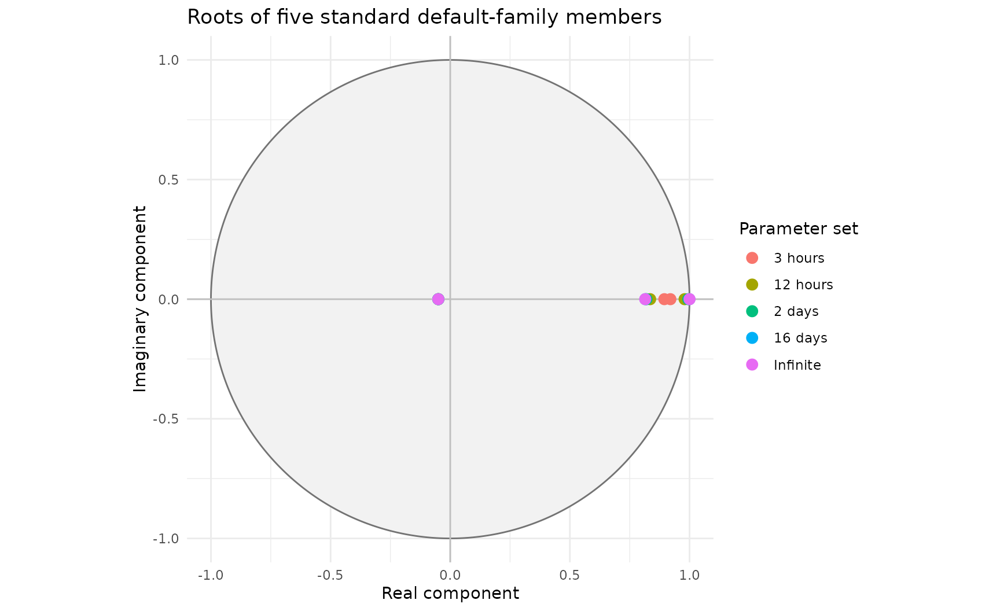

Selecting a Default-Family Parameter Set
Source:vignettes/default-parameter-family-section.Rmd
default-parameter-family-section.RmdSelecting a default-family parameter set
A new AR model does not require three independently estimated decay times. In the default family, the principal root controls most long-duration behaviour. The middle and rapid roots shape the response shortly after the forecast starts. It is therefore sufficient to select one principal timescale for the catchment.
Suitable evidence includes catchment response time, FEH lag, event analysis and a broad rapid, medium or slow response classification. The five-day IMFS forecast horizon and the inability of fixed-parameter AR to represent different dry- and wet-period timescales mean that the selected value should be treated as a useful catchment classification, not a precisely calibrated physical constant.
Continuous analytical construction
parameters <- default_family_ar_parameters(
principal_decay = 9,
units = "hours",
time_step_minutes = 15
)
parameters@coefficients
#> a_1 a_2 a_3
#> 1.76500000 -0.72875763 -0.04078111
root_table(roots(parameters, time_step_minutes = 15))
#> root_id root_real root_imaginary root_modulus lag_root_real
#> <int> <num> <num> <num> <num>
#> 1: 3 0.97260448 9.047288e-26 0.97260448 1.028167
#> 2: 2 0.84218259 -9.047288e-26 0.84218259 1.187391
#> 3: 1 -0.04978707 0.000000e+00 0.04978707 -20.085537
#> lag_root_imaginary lag_root_modulus raw_decay_time_steps decay_time_steps
#> <num> <num> <num> <num>
#> 1: -9.564139e-26 1.028167 36.0000000 36.0000000
#> 2: 1.275575e-25 1.187391 5.8221304 5.8221304
#> 3: 0.000000e+00 20.085537 0.3333333 0.3333333
#> effective_decay_time_steps decay_time_hours effective_decay_time_hours
#> <num> <num> <num>
#> 1: 36.0000000 9.00000000 9.00000000
#> 2: 5.8221304 1.45553260 1.45553260
#> 3: 0.2338711 0.08333333 0.05846776
#> oscillation_period_steps oscillation_period_hours is_growing is_persistent
#> <num> <num> <lgcl> <lgcl>
#> 1: Inf Inf FALSE FALSE
#> 2: Inf Inf FALSE FALSE
#> 3: 2 0.5 FALSE FALSE
#> is_oscillating modal_stability lag_stability display_order
#> <lgcl> <fctr> <fctr> <int>
#> 1: FALSE Stable Stable 1
#> 2: FALSE Stable Stable 2
#> 3: TRUE Stable Stable 3
plot_ar(roots(parameters, time_step_minutes = 15), root_definition = "modal")
This calculation does not interpolate between the six-hour and
twelve-hour rows of a table. It sets the nine-hour principal root
directly, solves the middle root while retaining the default-family
constraints and converts the three roots to AR coefficients. All three
roots sit inside the unit circle, as the family’s own construction
guarantees: the validity check in
default_family_ar_parameters() refuses to return a member
whose middle root would not.
Standard published choices
Use a named standard set where configuration consistency and easy recognition are priorities.
parameters <- standard_family_ar_parameters("12 hours")
parameters@coefficients
#> a_1 a_2 a_3
#> 1.76500000 -0.72782773 -0.04073482The full catalogue is available programmatically:
standard_family_ar_table()
#> parameter_set principal_decay_steps principal_decay_hours a_1 a_2
#> <char> <num> <num> <num> <num>
#> 1: 3 hours 12 3 1.765 -0.7328501
#> 2: 6 hours 24 6 1.765 -0.7303273
#> 3: 12 hours 48 12 1.765 -0.7278277
#> 4: 1 day 96 24 1.765 -0.7262460
#> 5: 2 days 192 48 1.765 -0.7253693
#> 6: 4 days 384 96 1.765 -0.7249091
#> 7: 8 days 768 192 1.765 -0.7246735
#> 8: 16 days 1536 384 1.765 -0.7245543
#> 9: 32 days 3072 768 1.765 -0.7244943
#> 10: 64 days 6144 1536 1.765 -0.7244643
#> 11: Infinite Inf Inf 1.765 -0.7244341
#> a_3 fast_decay_steps fast_period_steps middle_decay_steps
#> <num> <num> <num> <num>
#> 1: -0.04098486 0.3333333 2 8.991258
#> 2: -0.04085926 0.3333333 2 6.412102
#> 3: -0.04073482 0.3333333 2 5.560536
#> 4: -0.04065607 0.3333333 2 5.203171
#> 5: -0.04061242 0.3333333 2 5.038467
#> 6: -0.04058951 0.3333333 2 4.959295
#> 7: -0.04057777 0.3333333 2 4.920468
#> 8: -0.04057184 0.3333333 2 4.901240
#> 9: -0.04056886 0.3333333 2 4.891672
#> 10: -0.04056736 0.3333333 2 4.886899
#> 11: -0.04056586 0.3333333 2 4.882134The table is useful for governance, recognition and validation. It is not required for calculation and should not be used for linear interpolation of coefficients.
Precision
Small changes in the second and third coefficients can produce large changes in principal decay time. Keep full numerical precision within R. Where values must be transferred manually, retain at least five significant figures and reassess the resulting roots after transfer.
Mathematical construction
The standard table contains selected points from a continuous analytical family. The coefficients are not obtained by interpolating between adjacent rows.
In plain English, before the equations
An AR(3) model has three characteristic roots (see “Characteristic Roots for Novice Flood Forecast Modellers” if roots themselves are unfamiliar). Picking a parameter set by hand normally means picking all three independently — three separate numbers to justify, three separate things that could be wrong. The default family cuts that down to one honest decision.
It does this by fixing two of the three roots outright and solving for the third:
- The fast root is nailed down completely — same value, every single member of the family, no exceptions. It governs behaviour in the first timestep or two after the forecast starts and is not something a principal-decay judgement has any business changing.
- The first AR coefficient,
,
is also nailed down, at
1.765(more on where that number comes from below). Because is just the sum of all three roots, fixing it is really fixing a constraint on the roots, not a root itself. - That leaves exactly one unknown: the middle root. Once you’ve chosen the principal root (from your catchment’s timescale) and the fast root is already fixed, the constraint “all three roots must sum to 1.765” pins the middle root down uniquely. There’s no fitting, no optimisation, no judgement call left — just arithmetic.
So the modeller’s only real decision is the principal decay time. Everything else — the middle root, the fast root, and the three AR coefficients that come out at the end — follows automatically and deterministically from that one choice. The equations below are that arithmetic, written out formally.
The key piece of maths worth having an intuition for, before the
formulas: a root closer to 1 decays more slowly, and the
relationship is exponential, not linear. Doubling a decay time does
not move the root halfway to 1 again — it moves it
much less than that, because the root is already close to 1
and there isn’t much room left to move into. That single fact explains
almost everything about why this family behaves the way it does,
including why some coefficients barely move even when the underlying
decay time changes a great deal (see “Why the coefficients change so
little” below).
For a principal decay time , expressed in model timesteps, the principal modal root is
For an infinite principal decay time,
The rapid root is defined by a decay time and oscillation period :
The default family uses
In plain English: a decay time of a third of a timestep is about as fast as decay gets without becoming instantaneous, and an oscillation period of exactly two timesteps means the root flips sign at every single step rather than tracing out a smooth curve. Because , that flip-every-step behaviour collapses what looks like it should be a complex (oscillating) root into a plain negative real number:
For a third-order model, the first AR coefficient is the sum of the three roots:
The default family fixes
The middle positive root is therefore solved directly, by rearranging that same sum — and are already known, so is whatever is left over:
Its decay time is
Once the three modal roots are known, the characteristic polynomial is
Expanding the product gives the Deltares AR coefficients:
and
In plain English, these three lines are nothing more exotic than multiplying out three brackets: expands into a cubic in , and matching that expansion against the AR recurrence’s own cubic form is what hands back , and directly from the three roots — no separate fitting step, just algebra that has to come out this way given three roots and a third-order polynomial.
This is the calculation performed by
default_family_ar_parameters(). The only empirical decision
is the choice of principal decay time. The conversion from that
timescale to roots and coefficients is deterministic.
Where does 1.765 come from?
Not from anything in this package. 1.765 is simply the
value of
the Environment Agency’s existing published default parameter sets
already use: both default_ar_parameters()’s 2024 default
(c(1.765, -0.72625, -0.040656)) and
default_et_ar_steady_parameters()’s steady ET-AR default
(c(1.765, -0.7244342, -0.04056586)) were established
independently, by whatever calibration exercise originally produced each
of them, and both happen to share this exact first coefficient.
default_family_ar_parameters() does not derive
1.765 from any underlying physical reasoning; it takes that
agreement as its starting constraint and asks: what family of parameter
sets do you get if you hold
fixed at the value both existing defaults already share, and let only
the principal decay vary?
That the two independently-published defaults turn out to be exact
points on the same continuous curve is evidence this way of reading
1.765 is the right one — a coincidence this exact would be
a strange one otherwise — but it is evidence, not proof, and it does not
explain why 1.765 rather than some other value was
originally chosen. This package’s repository has no record of that
original calibration (what catchment, what data, what fitting method
produced the EA’s 2024 default in the first place). If that provenance
exists in EA governance documentation, it belongs here as a citation;
until then, treat 1.765 as an inherited,
externally-approved constant that this family takes as given, not as
something derived from first principles.
The agreement itself is checkable directly, not just asserted:
one_day <- standard_family_ar_parameters("1 day")
one_day@coefficients
#> a_1 a_2 a_3
#> 1.76500000 -0.72624604 -0.04065607
default_ar_parameters()@coefficients
#> a_1 a_2 a_3
#> 1.765000 -0.726250 -0.040656
infinite <- standard_family_ar_parameters("Infinite")
infinite@coefficients
#> a_1 a_2 a_3
#> 1.76500000 -0.72443414 -0.04056586
default_et_ar_steady_parameters()@coefficients
#> a_1 a_2 a_3
#> 1.76500000 -0.72443420 -0.04056586Two parameter sets, published independently of one another and of
this family, both fall out of the same construction at the same
a_1 = 1.765, to within the rounding each was originally
published at. Nothing forced that to happen; the family’s construction
was reverse-engineered from noticing it.
Worked nine-hour example
Working entirely by hand, for a catchment with a nine-hour principal decay and a 15-minute model timestep:
Step 1 — convert the principal decay to model timesteps.
Step 2 — calculate the principal root.
This is close to 1, as expected for a decay time (36
steps, or nine hours) that is long compared to a single 15-minute
timestep.
Step 3 — take the fixed fast root. No calculation needed; it is the same for every member of the family:
Step 4 — solve the middle root from the fixed sum. is fixed, and are now both known, so:
Step 5 — convert the middle root back to a decay time, for interpretability.
So this nine-hour catchment’s middle root decays with a time constant of roughly an hour and a half — plausible as a secondary response, and not something that had to be chosen separately; it fell straight out of fixing and the fast root.
Step 6 — expand the three roots into AR coefficients, by multiplying out :
That hand calculation should match the package exactly:
nine_hour <- default_family_ar_parameters(
principal_decay = 9,
units = "hours",
time_step_minutes = 15
)
attr(nine_hour, "modal_roots")
#> principal middle fast
#> 0.97260448 0.84218259 -0.04978707
attr(nine_hour, "middle_decay_steps")
#> [1] 5.82213
nine_hour@coefficients
#> a_1 a_2 a_3
#> 1.76500000 -0.72875763 -0.04078111The only number a modeller actually chose in this entire derivation was “nine hours.” Everything from Step 2 onward is arithmetic with no further judgement calls, which is the whole point of fixing and the fast root in the first place: it turns three independent decisions into one.
Why the coefficients change so little
The root modulus is related exponentially to decay time:
As becomes large, approaches one. Large changes in a long decay time therefore correspond to small changes in the principal root and still smaller changes in the resulting coefficients. This explains why parameter sets with markedly different principal decay times can have visually similar values of and .
It also explains why coefficient rounding matters. A small numerical change in a coefficient can imply a much larger change in the longest decay time. Calculate and store coefficients at full precision; round only for display.
Visualising the family
plot_ar() shows one parameter set’s roots at a time. To
see the claim above directly, rather than take it on trust, plot the
principal root from several published standard sets together:
family_roots <- data.table::rbindlist(lapply(
c("3 hours", "12 hours", "2 days", "16 days", "Infinite"),
function(choice) {
d <- root_table(roots(standard_family_ar_parameters(choice)))
d[, parameter_set := choice]
d
}
))
# Same unit-circle construction plot_ar() uses internally, for a consistent
# visual style between this custom plot and the package's own plots.
angle <- seq(0, 2 * pi, length.out = 721L)
unit_circle <- data.table::data.table(x = cos(angle), y = sin(angle))
ggplot() +
geom_polygon(
data = unit_circle, aes(x, y, group = 1),
fill = "grey95", colour = "grey45"
) +
geom_hline(yintercept = 0, colour = "grey75") +
geom_vline(xintercept = 0, colour = "grey75") +
geom_point(
data = family_roots,
aes(
root_real, root_imaginary,
colour = factor(parameter_set, levels = c(
"3 hours", "12 hours", "2 days", "16 days", "Infinite"
))
),
size = 3
) +
coord_fixed() +
theme_minimal() +
labs(
x = "Real component", y = "Imaginary component", colour = "Parameter set",
title = "Roots of five standard default-family members"
)
Three clusters are visible. The fast root sits at the same point for
every parameter set (it is fixed by construction, at
-0.0498). The middle root moves only a little across the
whole published range. The principal root is the one doing most of the
work: it starts noticeably inside the circle at “3 hours” and crowds
closer and closer to 1 as the principal decay lengthens,
exactly as the exponential relationship above predicts, and visibly
slowing down as it does so – the gap between “16 days” and “Infinite” is
far smaller than the gap between “3 hours” and “12 hours”, even though
the second pair differs by far more decay time. That compression is the
whole reason coefficient rounding has to be handled with care at the
long-decay end of the family.